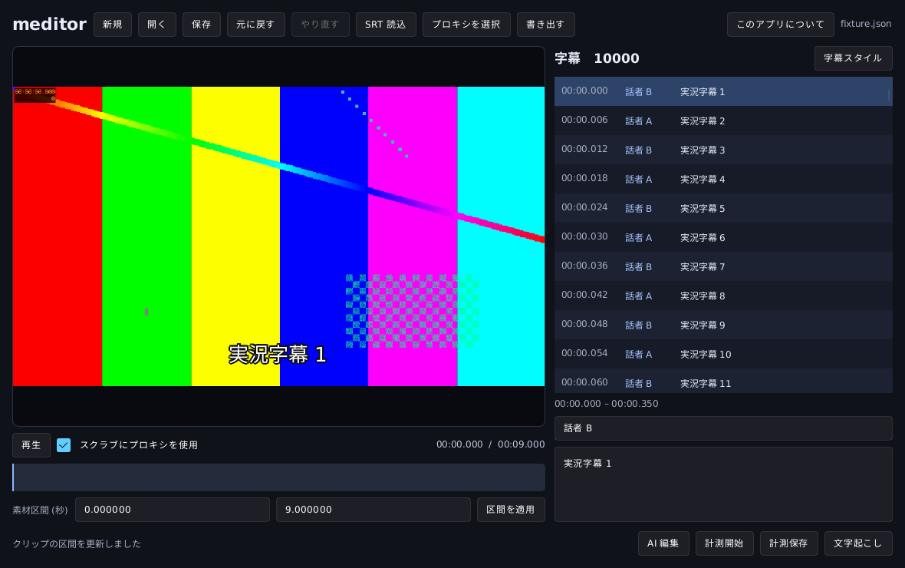
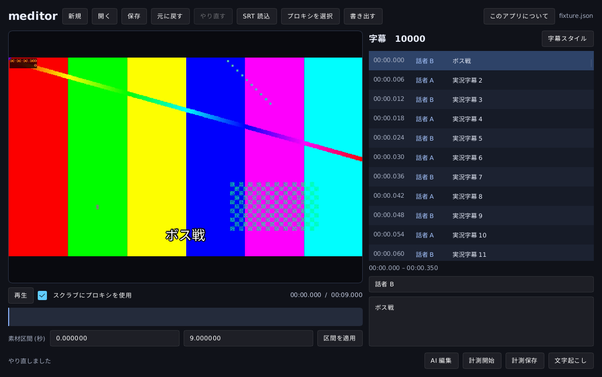

Undo の後の新しい編集で通常の Redo の候補を消す
素材区間を0〜9秒に変更する
- 合成プロジェクトを開く
- 開始に「0」、終了に「9」を入力して「区間を適用」を押す
操作直後の画面原寸で開く ↗ 
確認結果
確認点 期待値 実際の値 結果 素材区間 0.000000 – 9.000000 秒 0.000000 – 9.000000 秒 成功 区間変更を元に戻す
- ツールバーの「元に戻す」を押す
操作直後の画面原寸で開く ↗ 
確認結果
確認点 期待値 実際の値 結果 素材区間 0.000000 – 60.000000 秒 0.000000 – 60.000000 秒 成功 やり直すボタン 有効 有効 成功 別の編集として字幕本文を変更する
- 字幕一覧の先頭行を選び、本文を「ボス戦」に書き換える
操作直後の画面原寸で開く ↗ 確認結果
確認点 期待値 実際の値 結果 字幕一覧の本文 ボス戦 ボス戦 成功 やり直すボタン 無効 無効 成功
保存後に開き直したプロジェクトで Undo と Redo を使う
字幕と素材区間を順に変更する
- 合成プロジェクトを開く
- 字幕一覧の先頭行を選び、本文を「ボス戦」に書き換える
- 開始に「0」、終了に「9」を入力して「区間を適用」を押す
操作直後の画面原寸で開く ↗ 確認結果
確認点 期待値 実際の値 結果 字幕一覧の本文 ボス戦 ボス戦 成功 素材区間 0.000000 – 9.000000 秒 0.000000 – 9.000000 秒 成功 区間変更だけを元に戻して保存する
- ツールバーの「元に戻す」を押す
- ツールバーの「保存」を押す
操作直後の画面原寸で開く ↗ 確認結果
確認点 期待値 実際の値 結果 素材区間 0.000000 – 60.000000 秒 0.000000 – 60.000000 秒 成功 保存結果 プロジェクトを保存しました プロジェクトを保存しました 成功 保存したプロジェクトを開き直す
- 直前に保存した fixture.json を再度開く
操作直後の画面原寸で開く ↗ 確認結果
確認点 期待値 実際の値 結果 字幕一覧の本文 ボス戦 ボス戦 成功 素材区間 0.000000 – 60.000000 秒 0.000000 – 60.000000 秒 成功 元に戻すボタン 有効 有効 成功 やり直すボタン 有効 有効 成功 区間変更をやり直す
- ツールバーの「やり直す」を押す
操作直後の画面原寸で開く ↗ 
確認結果
確認点 期待値 実際の値 結果 素材区間 0.000000 – 9.000000 秒 0.000000 – 9.000000 秒 成功